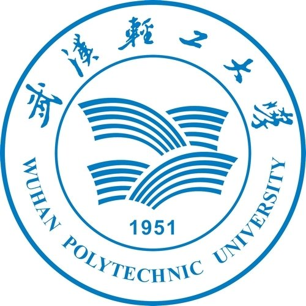

硕士研究生，中共党员 |
我目前在中国科学院深圳先进技术研究院，是细胞与基因线路设计中心陈业老师课题组的研究助理。 本人已于2022年6月从中国地质大学（武汉），数学与物理学院，应用统计专业取得了硕士学位。 在此之前，我于2019年6月在 武汉轻工大学，经济与管理学院，金融学专业取得了学士学位。
我的研究兴趣主要包括：机器学习，矩阵分解，自然语言处理，生物信息，模式识别等。
硕士 中国地质大学（武汉） (2019.09 ~ 2022.06)
|
|  | 本科 武汉轻工大学 (2015.09 ~ 2019.07)
|
短文本情感分类的特征提取算法研究
黄斯怡，陈兴荣
厦门大学学报（自然科学版），退改.
项目一：井震融合下的波阻抗深层网络反演模型推导校验模块测试（2021.05~2021.12）
项目来源：中国科学院战略性先导科技专项（A类）智能导钻技术装备体系与相关理论研究（XDA14000000）
项目二：随钻条件下勘探目标评价结果动态调整软件模块测试（2020.05~2020.12）
项目来源：中国科学院战略性先导科技专项（A类）智能导钻技术装备体系与相关理论研究（XDA14000000）
项目三：面向浅层学习、深层应用的系列深度学习软件模块评估测试（2020.05~2021.01）
项目来源：中国科学院战略性先导科技专项（A类）智能导钻技术装备体系与相关理论研究（XDA14000000）